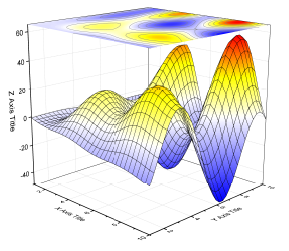
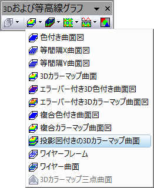

投影図付きの3Dカラーマップ曲面
Color-Map-Surface-Projection

要求されるデータ
- ワークシート：1つのZ列（あるいは、その部分領域）を選択する必要があります。Z列と関連するXY列がある場合、そのXY列が使われます。そうでない場合、ワークシートのデフォルトのXY値が使われます。
または、
または、
- イメージ: 1つのイメージウィンドウのアクティブページ
グラフ作成
行列シート/イメージウィンドウをアクティブにするか、必要なデータをワークシート上で選択します。
メニューから｢｣を選択します。
または、
「3Dおよび等高線グラフ」ツールバーの投影図付きの3Dカラーマップ曲面ボタンをクリックします。
- 
テンプレート
glCMAP.OTP (Originのプログラムフォルダにインストールされています。)